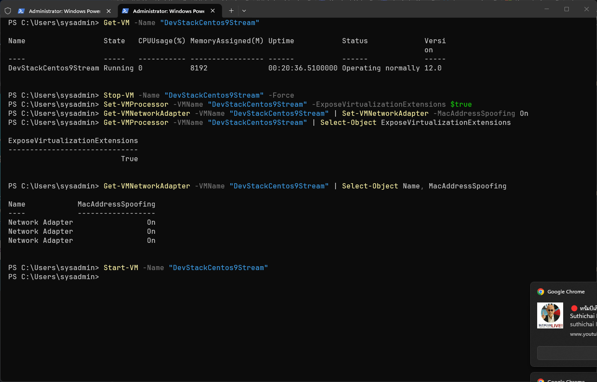
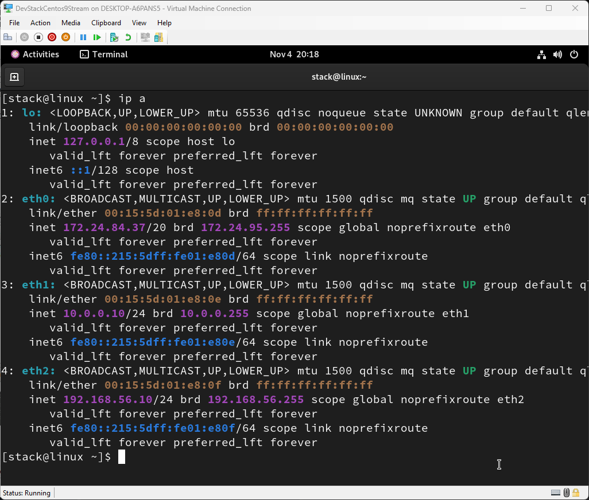
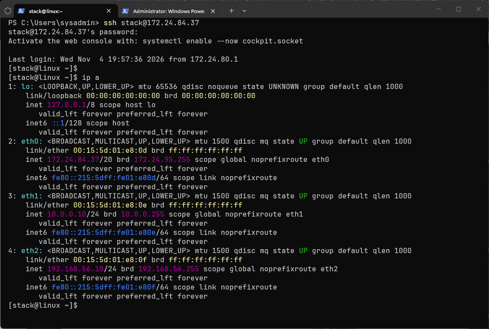
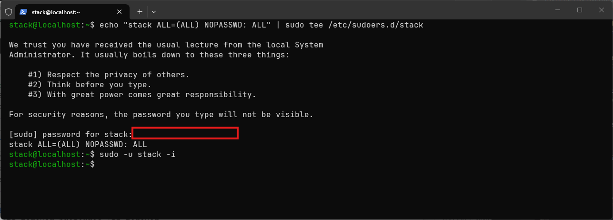
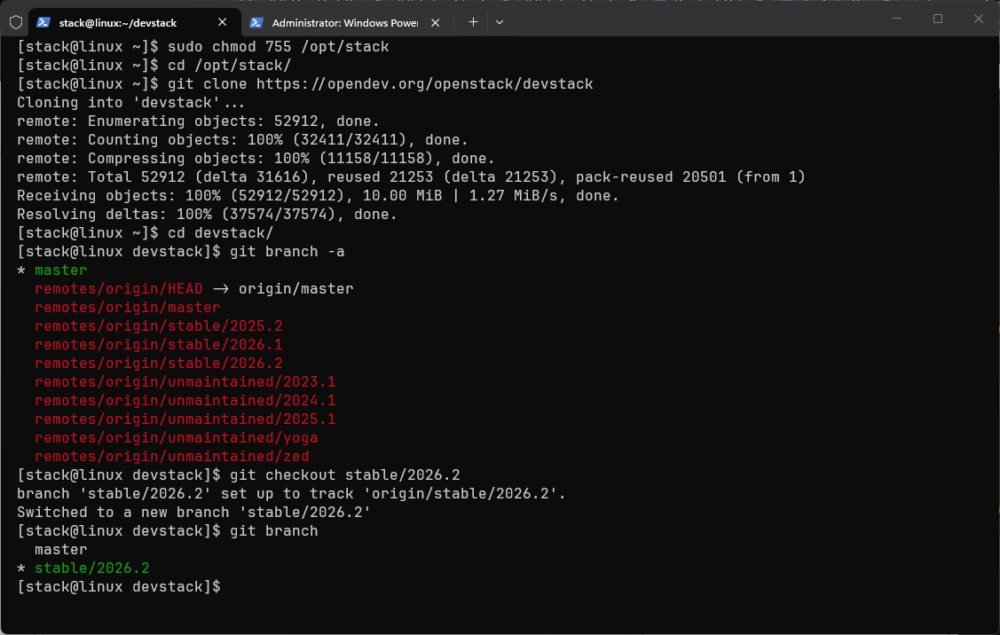
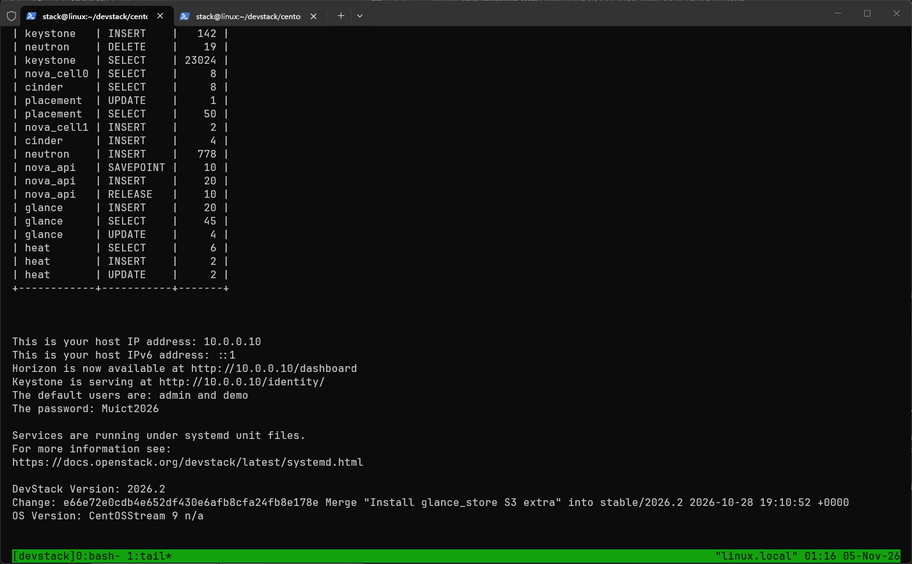
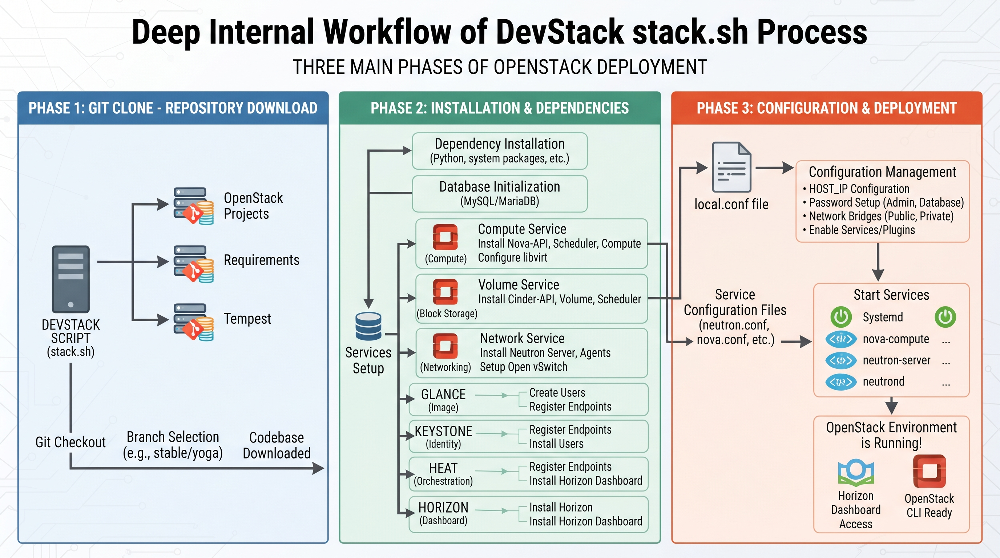
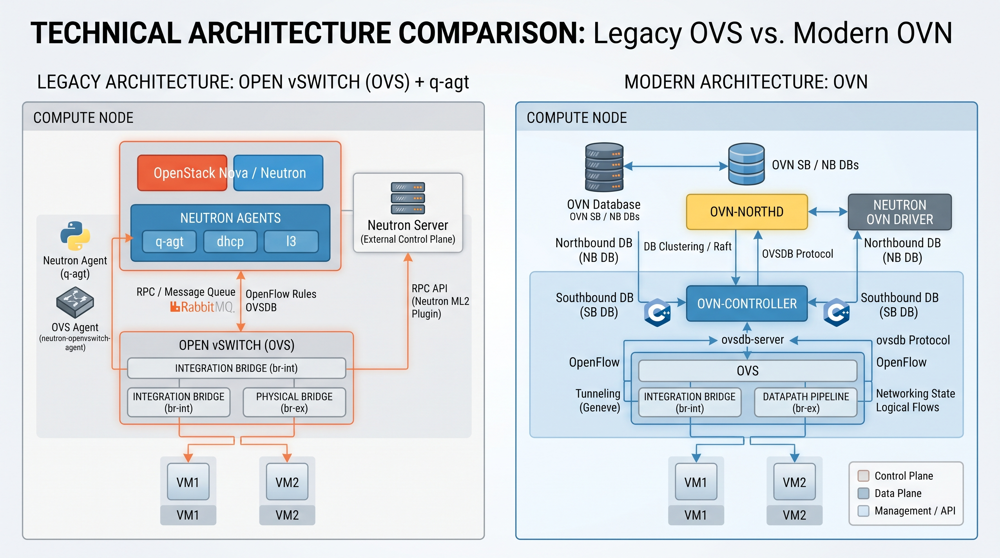
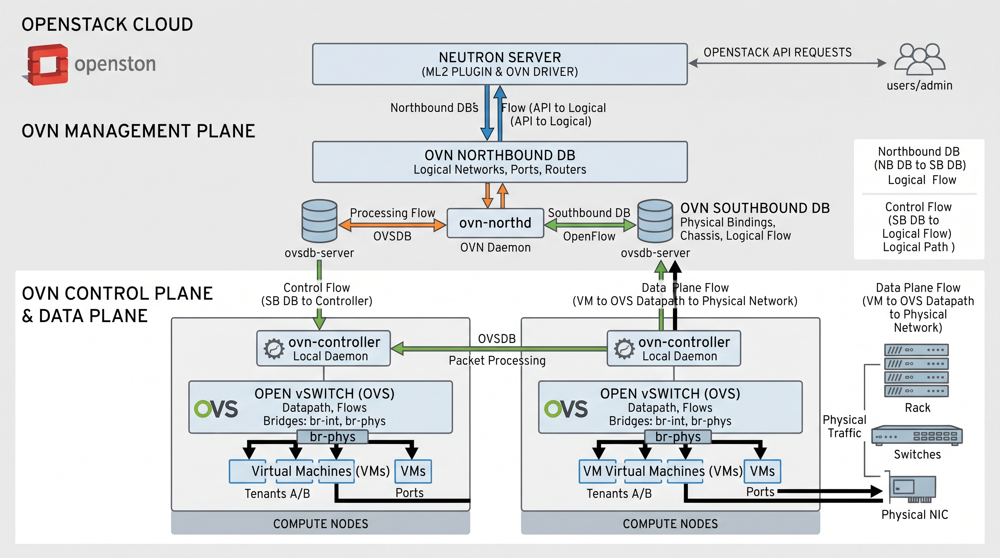

การทดลองที่ 1: ติดตั้ง DevStack บน CentOS Stream 9¶
วัตถุประสงค์¶
ติดตั้งสภาพแวดล้อม OpenStack แบบ All-in-One บน CentOS Stream 10 โดยใช้ DevStack บน Virtual Machine ที่สร้างจาก Lab 0: ติดตั้ง CentOS Stream 10 บน Hyper-V
ข้อกำหนด¶
| รายการ | ข้อกำหนด |
|---|---|
| ระบบปฏิบัติการ | CentOS Stream 10 (ติดตั้งจาก Lab 0) |
| หน่วยความจำ (RAM) | 8 GB (8192 MB) |
| ดิสก์ | 60 GB |
| ผู้ใช้ | stack (non-root พร้อม sudo NOPASSWD) |
| เครือข่าย | 3 adapters ตามที่ตั้งค่าใน Lab 0 |
Step 1: เตรียมระบบ¶
Powershell Administrator¶
- เปิดการใช้งาน Nested Hyper-V virtualization เพื่อให้ VM เข้าถึงชั้นของ Hypervisor ได้โดยตรง จำเป็นต้องทำ
# 1. ตรวจสอบสถานะเครื่องเสมือน (ต้องเป็น Off)
Get-VM -Name "DevStackCentos9Stream"
# 2. ปิดเครื่องเสมือนให้สนิท (ถ้ายังไม่ Off)
Stop-VM -Name "DevStackCentos9Stream" -Force
# 3. เปิดใช้งาน Nested Virtualization (คำสั่งหลัก)
Set-VMProcessor -VMName "DevStackCentos9Stream" -ExposeVirtualizationExtensions $true
# 4. เปิด MAC Address Spoofing (จำเป็นสำหรับ nested VM ออกเครือข่าย)
Get-VMNetworkAdapter -VMName "DevStackCentos9Stream" | Set-VMNetworkAdapter -MacAddressSpoofing On
# 5. ตรวจสอบว่าเปิด Nested Virtualization สำเร็จ
Get-VMProcessor -VMName "DevStackCentos9Stream" | Select-Object ExposeVirtualizationExtensions
# 6. ตรวจสอบว่า MAC Spoofing เปิดอยู่
Get-VMNetworkAdapter -VMName "DevStackCentos9Stream" | Select-Object Name, MacAddressSpoofing
# 7. เปิดเครื่องเสมือนกลับมา
Start-VM -Name "DevStackCentos9Stream"
# 8 ทดสอบ vmx สำหรับ intel, svm สำหรับ AMD และ kvm
grep -E 'vmx|svm' /proc/cpuinfo
lscpu | grep -i virtualization
lsmod | grep kvm

สลับไปยังผู้ใช้ stack¶

- ให้เข้าใช้งาน ไปที่ Linux Terminal สามารถ เปิด ผ่าน GUI แต่แนะนำ ให้เข้าผ่าน Window Termial ssh เข้าไป ip 172.24.90.184

ควรเห็น 3 interfaces:
- eth0: IP จาก DHCP (hyper-v) และ ได้ทำการเปลี่ยนให้เป็น Static ip แล้ว 172.24.84.37
- eth1: 10.0.0.10 (Management)
- eth2: 192.168.56.10 (External / สำหรับ br-ex)
- เราได้สร้าง user stack ตั้งแต่ สร้าง VM ใน hyperV เรียบร้อย

หรือหาก VM ยังไม่ได้สร้างผู้ใช้ stack: (lab ข้ามข้อนี้) เช่นในกรณีที่ linux server มี user ชื่อ stack
sudo useradd -s /bin/bash -d /opt/stack -m stack
echo "stack ALL=(ALL) NOPASSWD: ALL" | sudo tee /etc/sudoers.d/stack
sudo -u stack -i
Step 2: Clone DevStack และ ทำงานใน Branch stable¶
- เนื้อหาหลัก https://docs.openstack.org/devstack/latest/
sudo chmod 755 /opt/stack
cd /opt/stack
git clone https://opendev.org/openstack/devstack
cd devstack
git branch -a
# checkout code branch stable
git checkout stable/2026.2
# ยืนยันว่าว่าอยู่บน Branch stable/2026.2 จริง
git branch


upgrade pyton เป็น 3.11 centos 9 stream¶
# 1. ติดตั้ง Python 3.11 และ pip
sudo dnf install -y python3.11 python3.11-devel python3.11-pip
# 2. ตรวจสอบ
python3.11 --version
python3.11 -m pip --version
export PYTHON3_VERSION=3.11
# 3. กำหนดค่าบังคับใน local.conf
# เพิ่มในส่วน [[local|localrc]]
PYTHON3_VERSION=3.11
¶
``
Step 3: กำหนดค่า DevStack¶
สร้างไฟล์ local.conf โดยใช้ค่าที่เหมาะสมกับเครือข่าย 3 ตัวบน Hyper-V:
(ให้ copy code ข้างล่างไป วางใน Terminal) โครงสร้างนี้เรียกว่า bash heredoc ทำให้เราสามารถ copy เนื้อหาไป สร้าง file ได้ โดยตรง
cat > local.conf << 'EOF'
[[local|localrc]]
ADMIN_PASSWORD=Muict2024
DATABASE_PASSWORD=$ADMIN_PASSWORD
RABBIT_PASSWORD=$ADMIN_PASSWORD
SERVICE_PASSWORD=$ADMIN_PASSWORD
SERVICE_IP_VERSION=4
IP_VERSION=4
PYTHON3_VERSION=3.11
# IP ของ Management Interface (eth1) — ใช้กับ Horizon / API
HOST_IP=10.0.0.10
# Enable Service
enable_service rabbit mysql key
enable_service n-api n-cpu n-cond n-sch n-novnc n-cauth
enable_service g-api g-reg
enable_service cinder c-sch c-api c-vol
enable_service neutron q-svc q-ovn-metadata-agent
enable_service s-proxy s-object s-container s-account
enable_service placement-api
# เปิดใช้งานปลั๊กอิน Heat
enable_plugin heat https://opendev.org/openstack/heat
# Cinder
VOLUME_GROUP_NAME="stack-volumes"
VOLUME_NAME_PREFIX="volume-"
VOLUME_BACKING_FILE_SIZE=24G
# ===== Neutron Networking สำหรับ Hyper-V 3 Adapters =====
# External Network สำหรับ Floating IPs
FLOATING_RANGE=192.168.56.0/24
PUBLIC_BRIDGE=br-ex
Q_FLOATING_ALLOCATION_POOL=start=192.168.56.100,end=192.168.56.200
# Physical interface สำหรับ br-ex bridge (eth2)
FLAT_INTERFACE=eth2
PUBLIC_INTERFACE=eth2
# Private Network สำหรับ VM ภายใน
FIXED_RANGE=10.10.10.0/24
FIXED_NETWORK_SIZE=256
# ปิดบริการที่ไม่จำเป็นสำหรับ Lab
disable_service tempest
# การบันทึก Log
LOGFILE=/opt/stack/logs/stack.sh.log
LOGDAYS=2
LOG_COLOR=True
VERBOSE=True
# Download Fedora image
IMAGE_URL_SITE="https://download.fedoraproject.org"
IMAGE_URL_PATH="/pub/fedora/linux/releases/45/Cloud/x86_64/images/"
IMAGE_URL_FILE="Fedora-Cloud-Base-Generic-45-1.4.x86_64.qcow2"
IMAGE_URLS+=","$IMAGE_URL_SITE$IMAGE_URL_PATH$IMAGE_URL_FILE
EOF
 สำคัญ: ปรับ HOST_IP
สำคัญ: ปรับ HOST_IP
ปรับ HOST_IP ให้ตรงกับ IP ของ Management Interface (eth1) บน VM ของคุณ
ใช้คำสั่ง ip addr show eth1 เพื่อตรวจสอบ
 รหัสผ่าน
รหัสผ่าน
เปลี่ยน ADMIN_PASSWORD ให้ปลอดภัย ในตัวอย่างใช้ Muict2024 ค่าอื่น ๆ จะใช้รหัสเดียวกันเพื่อความสะดวกใน Lab
Devstack เรียกใช้งาน local.conf ได้อย่างไร ?¶

DevStack เรียกใช้ local.conf ผ่านกลไก "source (โหลด)" เมื่อเริ่มต้น stack.sh ไฟล์นี้ไม่ใช่ไฟล์กำหนดค่าที่โปรแกรมแยกวิเคราะห์แบบทั่วไป แต่เป็น สคริปต์เชลล์ที่ถูก source เข้ามา ดังนั้นตัวแปรทั้งหมดที่คุณเขียนในนั้นจะถูกนำไปใช้เป็นตัวแปรสภาพแวดล้อมของสคริปต์ทันที และใช้เพื่อ override ค่าเริ่มต้นใน DevStack
🔄 ลำดับการโหลดและตำแหน่งไฟล์¶
- ตำแหน่งไฟล์: ไฟล์
local.confจะต้องวางไว้ในไดเรกทอรีรากของ DevStack (เช่น~/devstack/local.conf) จึงจะสามารถเรียกใช้ได้อย่างถูกต้อง - จุดเข้าโหลด: เมื่อคุณรัน
./stack.shสคริปต์จะโหลดstackrcก่อน ในขั้นตอนนี้stackrcจะทำการ source ไฟล์local.confโดยอัตโนมัติ - กลไกการ override: เนื่องจากเป็นการโหลดแบบ source ตัวแปรที่คุณกำหนดใน
local.conf(เช่นHOST_IP,ADMIN_PASSWORD) จะแทนที่ค่าเริ่มต้นที่กำหนดไว้ล่วงหน้าในstackrcหรือสคริปต์อื่นๆ โดยตรง
📝 กฎไวยากรณ์สำคัญ¶
เนื่องจากมันถูกประมวลผลเป็นสคริปต์เชลล์ จึงต้องปฏิบัติตามไวยากรณ์ของเชลล์อย่างเคร่งครัด:
* ห้ามมีช่องว่าง: เครื่องหมายเท่ากับ = ทั้งสองด้านห้ามมีช่องว่าง ตัวอย่างเช่น ต้องเขียนเป็น HOST_IP=10.20.30.11 ไม่สามารถเขียนเป็น HOST_IP = 10.20.30.11
* หัวข้อพิเศษ: [[local|localrc]] ที่จุดเริ่มต้นไฟล์คือส่วนหัวพิเศษที่บอกให้ DevStack รู้ว่าส่วนนี้คือการกำหนดค่าแบบ local ที่ต้องโหลดก่อน จากนั้นเนื้อหาที่ตามมาจะถูกดำเนินการเหมือนสคริปต์เชลล์
พูดง่ายๆ คือ stack.sh เมื่อเริ่มต้นจะ "อ่าน" ไฟล์ local.conf ราวกับกำลังรันสคริปต์ เพื่อให้การกำหนดค่าของคุณมีผลตั้งแต่เริ่มต้น
Step 4: รันคำสั่งติดตั้ง DevStack¶
- ใช้ Tmux มาช่วย ในการ monitor
Step คำสั่งที่ใช้¶
cd ~/devstack
# 1. หยุด service ที่ค้าง (ถ้ามี)
./unstack.sh 2>/dev/null
# 2. ล้าง state
./clean.sh 2>/dev/null
# 3. ล้าง pip cache (กันปัญหา dependency ค้างจากรอบก่อน)
sudo -H python3.11 -m pip cache purge
# 4. รัน stack ใหม่
./stack.sh 2>&1 | tee /tmp/stack-install.log
การติดตั้งจะใช้เวลา 30–90 นาที ขึ้นอยู่กับความเร็วอินเทอร์เน็ตและฮาร์ดแวร์ โดย Stack.sh จะเริ่มจากติดตั้ง Repository ที่จำเป็นต้องใช้ ให้เราเอง อัตโนมัต และ จำทำการติดตั้ง service
หากสำเร็จ จะแสดงข้อความคล้ายกับนี้:
=========================
DevStack Component Timing
=========================
Total runtime: 2847 seconds
...
This is your host IP address: 10.20.30.11
This is your host IPv6 address: ::1
Horizon is now available at http://10.20.30.11/dashboard
Keystone is serving at http://10.20.30.11/identity/
The default users are: admin and demo
The password: Muict@2024
กรณีที่รันซ้ำได้ปลอดภัย¶
DevStack ออกแบบมาให้ทำงานซ้ำได้ (idempotent ในหลายขั้นตอน) เช่น ถ้า git clone มีอยู่แล้วจะข้าม, database มีอยู่แล้วจะไม่สร้างใหม่
🧹 คำสั่งที่ควรรู้¶
| คำสั่ง | ผลลัพธ์ | ใช้เมื่อ |
|---|---|---|
./unstack.sh |
หยุด services, ลบ screen, ล้าง network บางส่วน | แก้ config แล้วอยากเริ่มใหม่ |
./unstack.sh --all |
เหมือนข้างบน + ล้าง volume/data ด้วย | อยากเริ่มสะอาดกว่า |
./clean.sh |
ลบ database, state, volume ทั้งหมด | stack พังหนัก แก้ไม่หาย |
./stack.sh |
ติดตั้ง/เริ่ม services | ติดตั้งครั้งแรก หรือหลัง unstack/clean |
หน้าที่ สคริปต์หลักทั้ง 3 ตัวใน DevStack มีหน้าที่และการทำงานที่แตกต่างกันดังนี้ครับ:
unstack.sh: ใช้สำหรับ หยุด (Stop) การทำงานของเซอร์วิสและโพรเซสทั้งหมดของ OpenStack และ DevStack ที่กำลังรันอยู่ แต่ยังคงเก็บข้อมูลตั้งค่า, ฐานข้อมูล และไฟล์ต่างๆ ไว้เหมือนเดิมstack.sh: ใช้สำหรับ ติดตั้งและเริ่มการทำงาน (Start/Deploy) เซอร์วิสทั้งหมดของ OpenStack ตามไฟล์คอนฟิกlocal.confที่คุณกำหนดไว้clean.sh: ใช้สำหรับ ลบและล้างข้อมูลทั้งหมด (Clean/Purge) ที่ DevStack เคยสร้างขึ้นมา เช่น ฐานข้อมูลทั้งหมด, โฟลเดอร์ข้อมูลใน/opt/stack, บริดจ์เน็ตเวิร์ก (เช่นbr-ex) และอิมเมจ เพื่อเคลียร์ระบบให้กลับมาเหมือนก่อนติดตั้งใหม่ตั้งแต่ต้น (เสมือนรีเซ็ตระบบให้สะอาดหมดจด)
หากมีการเปิด ปิดเครื่อง¶
- สั่งรันสคริปต์เดิมซ้ำเพื่อปลุกเซอร์วิสและเน็ตเวิร์กทั้งหมดของ OpenStack ขึ้นมาใหม่:
ข้อควรระวังเรื่อง IP Address
หากเครื่องคอมพิวเตอร์ของคุณเชื่อมต่อผ่าน DHCP และได้รับ IP Address ใหม่ (ซึ่งจะทำให้ค่า HOST_IP ที่เคยตั้งไว้ใน local.conf ไม่ตรงกับ IP ปัจจุบัน) การรัน ./stack.sh อาจเกิดข้อผิดพลาดได้ แนะนำให้ตรวจสอบ IP ของเครื่องด้วยคำสั่ง ip a ก่อนทุกครั้งว่ายังคงตรงกับค่า HOST_IP ที่ตั้งไว้หรือไม่
Step 5: ตรวจสอบการติดตั้ง¶
โหลด Credentials¶
ตรวจสอบบริการต่าง ๆ¶
- Python API & SDK (วิธีที่นักพัฒนาเรียกใช้งาน OpenStack) ในการเขียนโปรแกรมคุยกับ OpenStack หรือแกะโค้ดส่วนที่เป็น Client SDK นักพัฒนาจะใช้เครื่องมือหลัก python-openstackclient (Openstack CLI) ทำให้สามารถใช้ คำสั่ง openstack ต่างๆ ได้
# รายการบริการ Compute
openstack compute service list
# รายการ Network Agent
openstack network agent list
# รายการ VM (ควรว่าง)
openstack server list
# รายการรูปแบบ (Flavors)
openstack flavor list
# รายการรูป VM (Images)
openstack image list
ตรวจสอบ Horizon Dashboard¶
เปิดเว็บเบราว์เซอร์บนเครื่อง Host (Windows) และเข้าไปที่:
| ช่อง | ค่า |
|---|---|
| Domain | default |
| User Name | admin |
| Password | Muict@2024 (หรือ ADMIN_PASSWORD ที่ตั้งไว้) |
Step 6: สร้าง VM ตัวแรกผ่าน CLI¶
# โหลด credentials ของ demo user
source /opt/stack/devstack/openrc demo demo
# สร้าง Keypair
ssh-keygen -t rsa -f ~/.ssh/devstack_key -N ""
openstack keypair create --public-key ~/.ssh/devstack_key.pub devstack_key
# เปิด Security Group สำหรับ SSH
openstack security group rule create --protocol tcp --dst-port 22 \
--remote-ip 0.0.0.0/0 default
# สร้าง VM
openstack server create \
--image cirros-0.6.2-x86_64-disk \
--flavor m1.tiny \
--network private \
--key-name devstack_key \
--security-group default \
--wait \
vm-01
# ตรวจสอบสถานะ
openstack server list
ปัญหาที่พบบ่อย¶
| ปัญหา | วิธีแก้ไข |
|---|---|
stack.sh ล้มเหลว มีข้อผิดพลาดเกี่ยวกับ apt |
CentOS ใช้ dnf ไม่ใช่ apt — DevStack รองรับอัตโนมัติ แต่ตรวจสอบว่ามีอินเทอร์เน็ต |
| หน่วยความจำไม่พอ OOM | เพิ่ม RAM VM เป็น 12-16 GB หรือเพิ่ม Swap |
| เครือข่ายไม่สามารถเชื่อมต่อได้ | ตรวจสอบ HOST_IP และ FLAT_INTERFACE ใน local.conf |
| ติดตั้งไม่สำเร็จ | รัน ./unstack.sh && ./stack.sh อีกครั้ง |
| Neutron agent รายงาน XXX | ตรวจสอบว่า eth2 (FLAT_INTERFACE) อยู่ใน state UP |
| ไม่สามารถเข้า Horizon ได้ | ตรวจสอบ firewall — sudo systemctl status firewalld |
การเปลี่ยนผ่านสู่ OVN (Open Virtual Network):¶
- Exclude q-get,q-l3

-
ในเวอร์ชันปัจจุบันของ DevStack และ Neutron ค่าเริ่มต้นของการทำระบบเน็ตเวิร์กได้เปลี่ยนมาใช้ OVN เป็น Backend หลักแทนสถาปัตยกรรม Open vSwitch (OVS) แบบดั้งเดิม
-
OVN จะควบคุมการทำ Virtual Networking ผ่าน ovn-controller และ ovn-northd ในตัวอยู่แล้ว
- เซอร์วิส q-agt (neutron-openvswitch-agent) ทำหน้าที่ควบคุม OVS แบบเก่า ซึ่งการทำงานจะชนและทับซ้อนกับระบบ OVN ที่ถูกเปิดใช้งานขึ้นมาพร้อมกัน
-
เมื่อเราปิดการใช้งาน q-l3 (Neutron L3 Agent) ในสถาปัตยกรรม OVN งานด้าน Layer 3 (เช่น การทำ Routing, Floating IP, และ Distributed Virtual Routing - DVR) ทั้งหมดจะถูกโอนย้ายไปให้ OVN (Open Virtual Network) เป็นผู้จัดการโดยอัตโนมัติที่ระดับล่าง (Kernel/Datapath) ผ่าน ovn-controller แทนครับ
-
คุณไม่จำเป็นต้องสร้าง L3 Agent แบบดั้งเดิมขึ้นมาใหม่ เนื่องจากระบบ OVN ได้ฝังฟังก์ชันการทำงานเหล่านี้ไว้ในสถาปัตยกรรมภายในเรียบร้อยแล้ว
-
ตรวจสอบว่าเซอร์วิสที่เกี่ยวข้องกับ OVN ทำงานครบถ้วนหรือไม่ด้วยคำสั่ง:
OVN management plan และ Control plan¶

สรุปสถาปัตยกรรมของ OVN (Open Virtual Network) ในส่วนของ Management Plane และ Control Plane เพื่อให้เข้าใจบทบาทและการทำงานร่วมกับ OpenStack ได้อย่างชัดเจนครับ:
1. OVN Management Plane (ระดับการจัดการและกำหนดนโยบาย)¶
Management Plane ทำหน้าที่รับคำสั่งจากผู้ดูแลระบบหรือ OpenStack API แล้วแปลงให้เป็นโครงสร้างข้อมูลเน็ตเวิร์กเชิงตรรกะ (Logical Networks)
- OpenStack Neutron (ML2/OVN Driver): ทำหน้าที่รับคำสั่ง REST API จากผู้ใช้ (เช่น สั่งสร้าง Network, Router, Subnet) แล้วบันทึกลงไปในฐานข้อมูลกลาง
- OVN Northbound DB (NB DB): ฐานข้อมูลที่เก็บข้อมูลเน็ตเวิร์กในมุมมองเชิงตรรกะ (Logical Switch, Logical Router, Port, ACL) โดยไม่สนใจว่าโครงสร้างฮาร์ดแวร์เบื้องหลังจะเป็นอย่างไร
ovn-northd(Daemon ตัวกลาง): ทำหน้าที่เป็นสะพานเชื่อมและตัวแปลภาษา คอยอ่านข้อมูลจาก Northbound DB มาประมวลผล แล้วแปลงย่อส่วนลงไปเก็บบันทึกไว้ใน Southbound DB เพื่อให้ฝั่ง Control Plane นำไปใช้งานต่อ
2. OVN Control Plane (ระดับควบคุมและสั่งการ)¶
Control Plane ทำหน้าที่กระจายและแปลนโยบายเชิงตรรกะให้กลายเป็นกฎการส่งข้อมูลจริงบนโหนดประมวลผล (Compute Nodes) แต่ละเครื่อง
- OVN Southbound DB (SB DB): ฐานข้อมูลศูนย์กลางที่เก็บสถานะทางกายภาพทั้งหมด เช่น รายชื่อเครื่อง Compute Node (Chassis) ที่มีอยู่, การผูกพอร์ตของ VM เข้ากับโหนดไหน, และ Logical Flows ที่ถูกแปลมาแล้ว
ovn-controller(Daemon ประจำโหนด):- เป็นเซอร์วิสที่จะรันอยู่บนทุก Compute Node คอยเฝ้าฟังความเปลี่ยนแปลงจาก Southbound DB
- ทำหน้าที่แปลง Logical Flows ให้กลายเป็นกฎ OpenFlow และสั่งการไปยัง Open vSwitch (OVS) บนเครื่องนั้นๆ ให้จัดการเส้นทางแพ็กเกจข้อมูล
สรุปภาพรวมการทำงาน (Flow)¶
- User / OpenStack API สั่งสร้างเครือข่ายผ่าน Neutron
- ข้อมูลถูกบันทึกที่ Northbound DB
ovn-northdแปลงข้อมูลแล้วส่งต่อไปยัง Southbound DBovn-controllerบนแต่ละ Compute Node ดึงข้อมูลจาก Southbound DB ไปสั่งงาน OVS ให้เปิดช่องทางรับส่งแพ็กเกจข้อมูลระหว่าง Virtual Machines (VMs) ได้อย่างแม่นยำและรวดเร็วโดยไม่ต้องพึ่งพา Agent แบบเดิม (q-agt,q-l3) อีกต่อไป
การล้างข้อมูลและเริ่มใหม่¶
cd /opt/stack/devstack
./unstack.sh 2>/dev/null
./clean.sh 2>/dev/null
./stack.sh 2>&1 | tee /tmp/stack-install.log
หากต้องการเริ่มต้นใหม่ทั้งหมด แนะนำให้ Restore Snapshot จาก Hyper-V Manager แทน:
สรุปการตั้งค่าเครือข่าย¶
| อินเทอร์เฟซ | Virtual Switch | IP | บทบาทใน OpenStack |
|---|---|---|---|
| eth0 | DefaultSwitch | DHCP | อินเทอร์เน็ต/ดาวน์โหลด |
| eth1 | Internal-Mgmt | 10.20.30.11 | Horizon/API, HOST_IP |
| eth2 | Internal-BrEx | 192.168.56.11 | br-ex, Floating IPs |
สคริปต์ของ DevStack จะสร้างและผูก br-ex (External Bridge) เพื่อทำหน้าที่เป็นสะพานเชื่อมระหว่างโครงสร้างเครือข่ายเสมือนของ OpenStack (เช่น VMs) กับโครงสร้างเครือข่ายภายนอก (Physical Network / Internet) ครับ
ขั้นตอนการทำงานเบื้องหลังของ Script เมื่อสร้าง br-ex¶
- สร้าง Open vSwitch Bridge (
br-ex): -
สคริปต์จะใช้คำสั่งของ Open vSwitch เพื่อสร้าง Virtual Bridge ขึ้นมาในระบบ ลีนุกซ์ (เช่นเดียวกับการสร้างสวิตช์เสมือน)
-
เชื่อมต่อ Physical Interface (
eth2): -
สคริปต์จะนำอินเทอร์เฟซจริงของเครื่อง (ตามที่คุณกำหนดใน
local.confเช่นFLAT_INTERFACE=eth2) มาผูกเข้ากับbr-exทำให้พอร์ตจริงกลายเป็นส่วนหนึ่งของบริดจ์นี้ -
กำหนด IP และ Routing (จุดที่เกิดปัญหา):
- ระบบเน็ตเวิร์กของลินุกซ์หรือสคริปต์บางตัว อาจพยายามกำหนด IP Address หรือสร้าง **Default Route ผ่านบริดจ์
br-ex**โดยอัตโนมัติ เพื่อให้สมมติว่าทราฟฟิกภายนอกวิ่งผ่านเส้นทางนี้ - ผลกระทบ: ทำให้เกตเวย์หลักของเครื่องที่เคยออกอินเทอร์เน็ตผ่าน
eth0ถูกทับด้วยเกตเวย์ของbr-exทำให้เครื่องหลุดจากการเชื่อมต่ออินเทอร์เน็ตภายนอก (เหตุผลที่เราต้องใช้คำสั่งsudo ip route del default dev br-exเพื่อดึงเส้นทางกลับมาที่eth0ครับ)
 การบ้าน
การบ้าน
📋 รายงานการทดลอง:
- Screenshot หน้า Horizon Dashboard หลังจากเข้าสู่ระบบสำเร็จ
- Screenshot รายการ
openstack compute service list - Screenshot รายการ
openstack network agent list - Screenshot
openstack server listแสดง vm-01 กำลังทำงาน - ตอบคำถาม:
HOST_IPในlocal.confมีหน้าที่อะไร? - ตอบคำถาม: ทำไมต้องมี 2 อินเทอร์เฟซแยกกัน (Mgmt vs External)?
ส่งผ่าน: [Google Classroom / LMS]
Note : Listnetwork¶
PS C:\Users\sysadmin> Get-VMSwitch | Select Name, SwitchType, NetAdapterInterfaceDescription
Name SwitchType NetAdapterInterfaceDescription
---- ---------- ------------------------------
Default Switch Internal
Internal-Mgmt-Net Internal
Internal-BrEx-Net Internal
WSL (Hyper-V f... Internal
สร้าง virtual switch ในเครื่อง lab¶
# ============================================
# สร้าง Virtual Switch สำหรับ OpenStack Lab
# รันใน PowerShell แบบ Administrator
# ============================================
# 1. ดูการ์ดเครือข่ายจริงก่อน (จดชื่อไว้)
Get-NetAdapter | Select Name, InterfaceDescription, Status
# 2. สร้างสวิตช์ management (Internal) — สำหรับ eth0, eth1
New-VMSwitch -Name "Internal-Mgmt-Net" -SwitchType Internal
# 3. สร้างสวิตช์ br-ex (Internal) — สำหรับ eth2
New-VMSwitch -Name "Internal-BrEx-Net" -SwitchType Internal
# 4. ตรวจสอบว่าสร้างสำเร็จ
Get-VMSwitch | Select Name, SwitchType
import vm command line¶
# Import VM (แก้ path ตามจริง)
Import-VM -Path "D:\HyperV-Backup\ชื่อVM\Virtual Machines\XXXX.xml" -Copy -GenerateNewId
หรือผ่าน Hyper-V Manager:
-
คลิก Import Virtual Machine
-
เลือกโฟลเดอร์ Export
-
เลือก Copy the virtual machine (create a new unique ID)
-
เลือกที่เก็บไฟล์
-
ตรวจสอบ mapping สวิตช์ (ควรเจอชื่อเดียวกันอัตโนมัติ)
ขั้นตอนก่อน Import OpenStack VM:
1. เปิด PowerShell (Run as Administrator)
2. รันคำสั่ง:
New-VMSwitch -Name "Internal-Mgmt-Net" -SwitchType Internal
New-VMSwitch -Name "Internal-BrEx-Net" -SwitchType Internal
3. ตรวจสอบ:
Get-VMSwitch | Select Name, SwitchType
4. Import VM ผ่าน Hyper-V Manager
→ เลือก "Copy the virtual machine"
→ mapping สวิตช์จะตรงอัตโนมัติ
5. เปิด VM → ตรวจสอบ network:
ip a
Fix intall Centos 9 Stream
# 1. ดูบริบทก่อน
sed -n '30,60p' ~/devstack/lib/rpc_backend
# 2. Comment ทั้ง 2 บรรทัด
sudo sed -i '40s/^/# /' ~/devstack/lib/rpc_backend
sudo sed -i '54s/^/# /' ~/devstack/lib/rpc_backend
# 3. ตรวจสอบ
sed -n '35,60p' ~/devstack/lib/rpc_backend
# 4. ยืนยันว่า RabbitMQ ยังอยู่ (ถ้าถูกลบไปแล้ว ให้ติดตั้งใหม่)
rpm -q rabbitmq-server
# ถ้าไม่มี:
sudo dnf install -y https://github.com/rabbitmq/rabbitmq-server/releases/download/v4.4.0/rabbitmq-server-4.4.0-1.el8.noarch.rpm
sudo systemctl enable --now rabbitmq-server
sleep 10
sudo rabbitmqctl status
# 5. รัน stack.sh
cd ~/devstack
./stack.sh 2>&1 | tee /tmp/stack-install.log